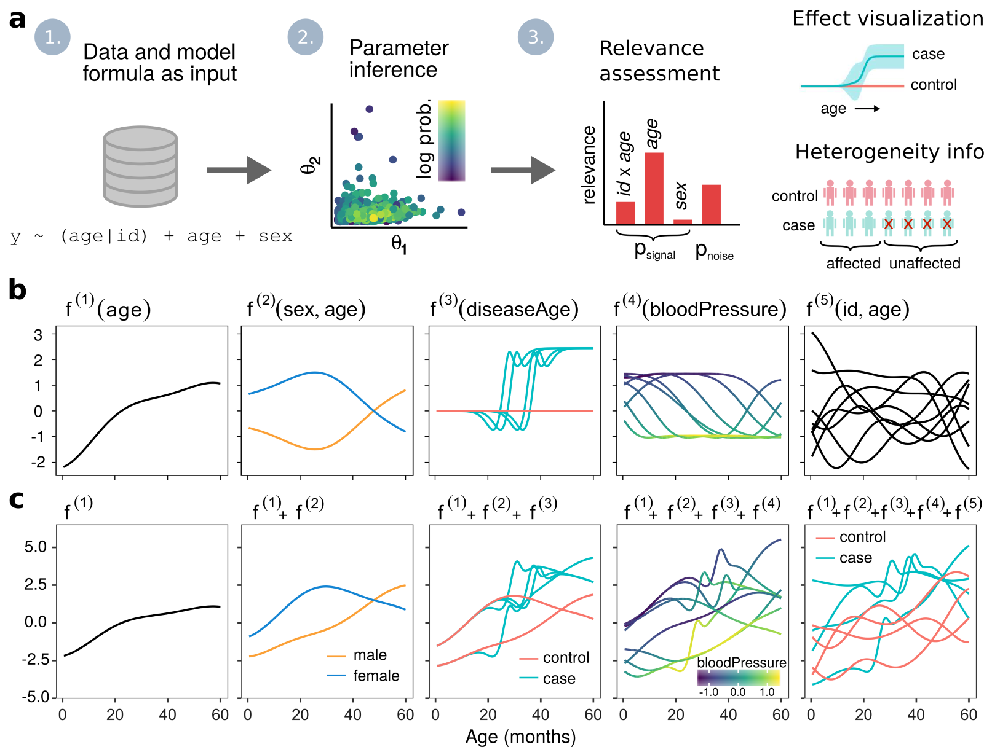

R-package for interpretable nonparametric modeling of longitudinal data using additive Gaussian processes. Contains functionality for inferring covariate effects and assessing covariate relevances. Various models can be specified using a convenient formula syntax.

Requirements
- The package should work on all major operating systems.
- R 3.4 or later is required, R 4.0.2 or later is recommended
Installing from source (GitHub)
- Install the latest development version of lgpr by running
install.packages('devtools') # if you don't have devtools already devtools::install_github('jtimonen/lgpr', dependencies = TRUE)
- If you have trouble installing the dependency rstan, see these instructions
- Installing from source requires that you have your toolchain setup properly. See the instructions for:
Real data and reproducing the experiments
For code to reproduce the experiments of our manuscript see https://github.com/jtimonen/lgpr-usage. Preprocessed longitudinal proteomics data is also provided there. See also the built-in read_proteomics_data() function.